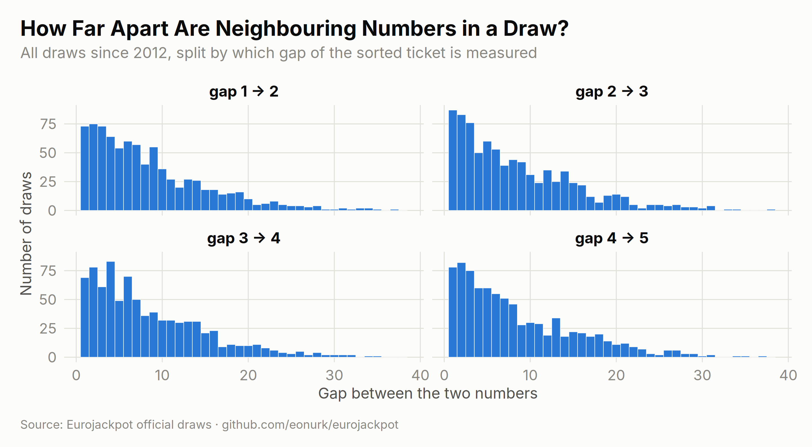
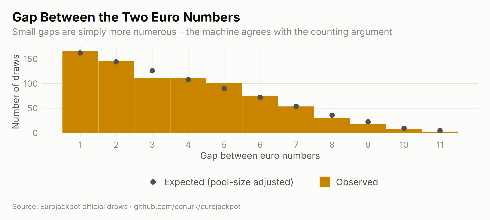
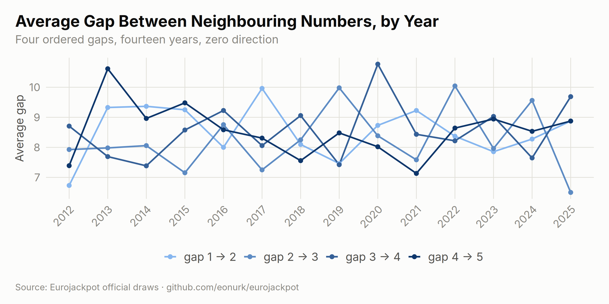
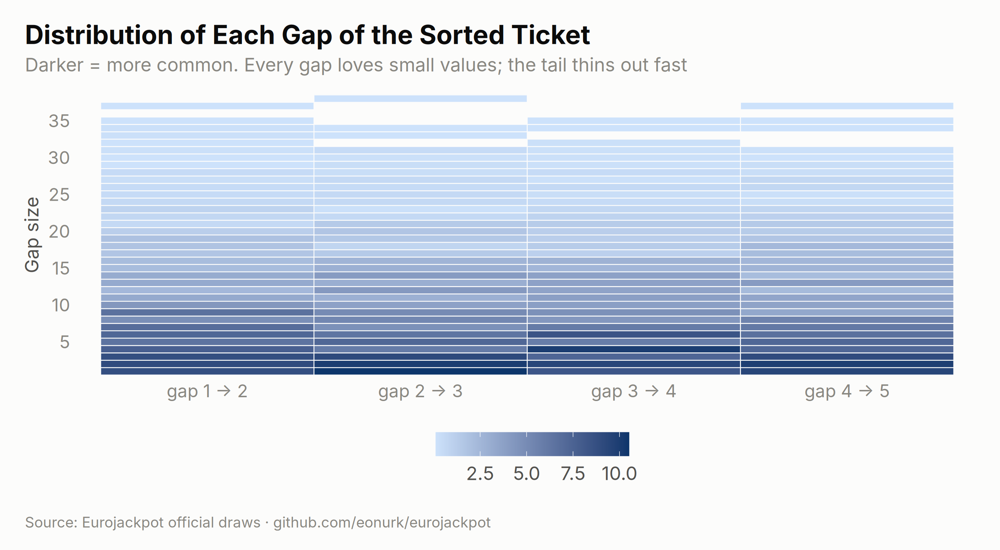
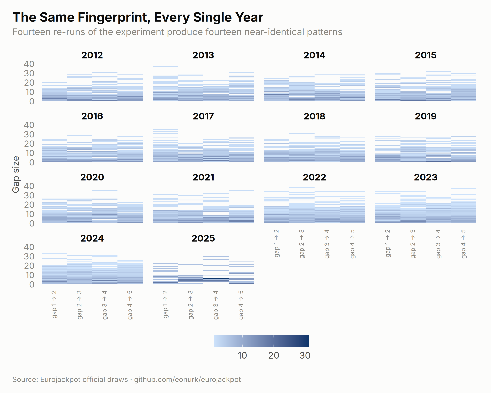

What does a typical winning ticket look like? Not the numbers themselves — the shape of them: how far apart the five balls land, how often two neighbours show up together, whether the machine prefers tight clusters or wide scatters. This chapter measures the geometry of 828 draws — and, as usual, checks every “pattern” against what randomness predicts before anyone gets excited.
Sort a draw’s five main numbers and measure the four gaps between neighbours. The outer gaps (1→2, 4→5) can stretch wide, while the middle gaps stay tighter — a classic signature of order statistics, not of the machine’s mood:
# Calculate pairwise differences between consecutive numbers
main_diffs <- results %>%
mutate(
diff_1_2 = main_2 - main_1,
diff_2_3 = main_3 - main_2,
diff_3_4 = main_4 - main_3,
diff_4_5 = main_5 - main_4
) %>%
select(draw_date, year, contains("diff_"))
main_diffs_long <- main_diffs %>%
pivot_longer(
cols = starts_with("diff_"),
names_to = "pair",
values_to = "difference"
) %>%
mutate(pair = factor(pair,
levels = c("diff_1_2", "diff_2_3", "diff_3_4", "diff_4_5"),
labels = c("gap 1 → 2", "gap 2 → 3", "gap 3 → 4", "gap 4 → 5")
))
ggplot(main_diffs_long, aes(x = difference)) +
geom_histogram(binwidth = 1, fill = ej_blue, color = ej_surface, linewidth = 0.2) +
facet_wrap(~pair, ncol = 2) +
labs(
title = "How Far Apart Are Neighbouring Numbers in a Draw?",
subtitle = "All draws since 2012, split by which gap of the sorted ticket is measured",
x = "Gap between the two numbers", y = "Number of draws", caption = ej_caption
)
The same idea for the two euro numbers, with the theoretical distribution overlaid — for a pool of size \(p\), a gap of \(d\) can be formed \(p-d\) ways, and the pool size changed twice:
results$pool_size <- ifelse(results$draw_date < as.Date("2014-10-10"), 8,
ifelse(results$draw_date < as.Date("2022-03-29"), 10, 12)
)
euro_gap <- data.frame(gap = results$euro_2 - results$euro_1)
expected_gap <- sapply(1:11, function(d) {
sum(ifelse(results$pool_size > d,
(results$pool_size - d) / choose(results$pool_size, 2), 0
))
})
ggplot(euro_gap, aes(x = gap)) +
geom_histogram(aes(fill = "Observed"), binwidth = 1, color = ej_surface, linewidth = 0.3) +
geom_point(
data = data.frame(gap = 1:11, expected = expected_gap),
aes(y = expected, color = "Expected (pool-size adjusted)"), size = 3
) +
scale_fill_manual(values = c("Observed" = ej_gold)) +
scale_color_manual(values = c("Expected (pool-size adjusted)" = ej_ink2)) +
scale_x_continuous(breaks = 1:11) +
labs(
title = "Gap Between the Two Euro Numbers",
subtitle = "Small gaps are simply more numerous - the machine agrees with the counting argument",
x = "Gap between euro numbers", y = "Number of draws", caption = ej_caption
)
If the machine’s geometry drifted, the average gaps would trend. They don’t — they braid around their expectations:
yearly_avg_diffs <- main_diffs_long %>%
group_by(year, pair) %>%
summarise(
avg_diff = mean(difference, na.rm = TRUE),
.groups = "drop"
)
ggplot(yearly_avg_diffs, aes(x = year, y = avg_diff, color = pair, group = pair)) +
geom_line(linewidth = 0.9) +
geom_point(size = 2.1) +
scale_color_manual(values = ej_ramp(4)) +
labs(
title = "Average Gap Between Neighbouring Numbers, by Year",
subtitle = "Four ordered gaps, fourteen years, zero direction",
x = NULL, y = "Average gap", caption = ej_caption
) +
guides(color = guide_legend(nrow = 1)) +
theme(axis.text.x = element_text(angle = 45, hjust = 1))
All four gaps share one fingerprint: short distances dominate and long ones thin out geometrically. The heatmap shows each gap position’s distribution as a column of probabilities:
heatmap_data <- main_diffs_long %>%
group_by(pair) %>%
count(difference) %>%
mutate(percentage = n / sum(n) * 100) %>%
ungroup()
ggplot(heatmap_data, aes(x = pair, y = difference, fill = percentage)) +
geom_tile(color = ej_surface, linewidth = 0.3) +
scale_fill_gradient(
low = ej_blue_pale, high = ej_blue_deep,
name = "Share of draws (%)"
) +
scale_y_continuous(breaks = seq(0, 45, by = 5), expand = c(0, 0)) +
labs(
title = "Distribution of Each Gap of the Sorted Ticket",
subtitle = "Darker = more common. Every gap loves small values; the tail thins out fast",
x = NULL, y = "Gap size", caption = ej_caption
) +
theme(panel.grid.major = element_blank(), legend.key.width = unit(28, "pt"))
heatmap_yearly <- main_diffs_long %>%
group_by(pair, year) %>%
count(difference) %>%
mutate(percentage = n / sum(n) * 100) %>%
ungroup()
ggplot(heatmap_yearly, aes(x = pair, y = difference, fill = percentage)) +
geom_tile() +
scale_fill_gradient(
low = ej_blue_pale, high = ej_blue_deep,
name = "Share of draws (%)"
) +
facet_wrap(~year) +
labs(
title = "The Same Fingerprint, Every Single Year",
subtitle = "Fourteen re-runs of the experiment produce fourteen near-identical patterns",
x = NULL, y = "Gap size", caption = ej_caption
) +
theme(
panel.grid.major = element_blank(),
legend.key.width = unit(28, "pt"),
axis.text.x = element_text(angle = 90, hjust = 1, vjust = 0.4, size = rel(0.7))
)
Reading patterns responsibly: everything above — the gap shapes, the consecutive-number rate, the yearly fingerprints — matches the combinatorics of drawing 5 balls from 50 without replacement. The patterns are real, but they belong to mathematics, not to the machine’s habits. A ticket shaped like a “typical” draw wins exactly as often as any other ticket.